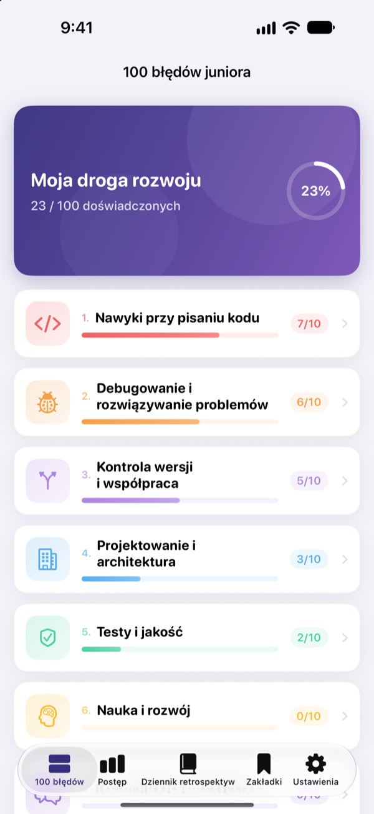
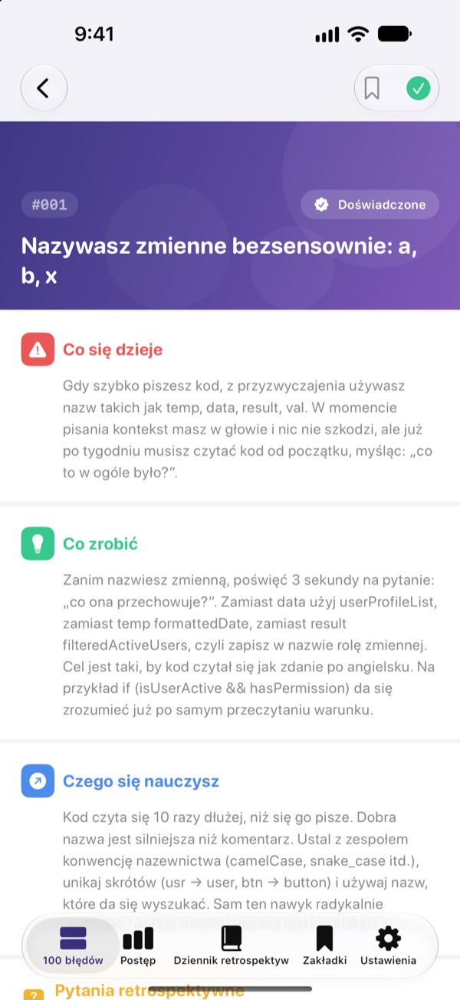
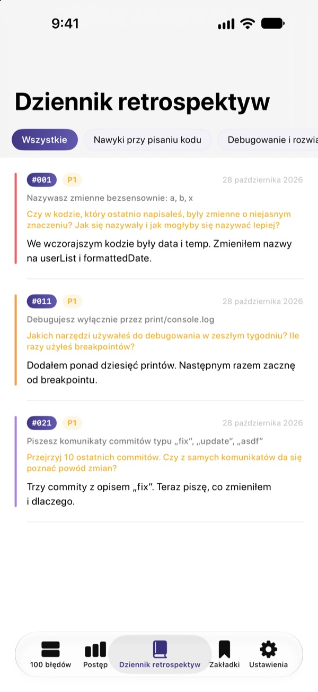
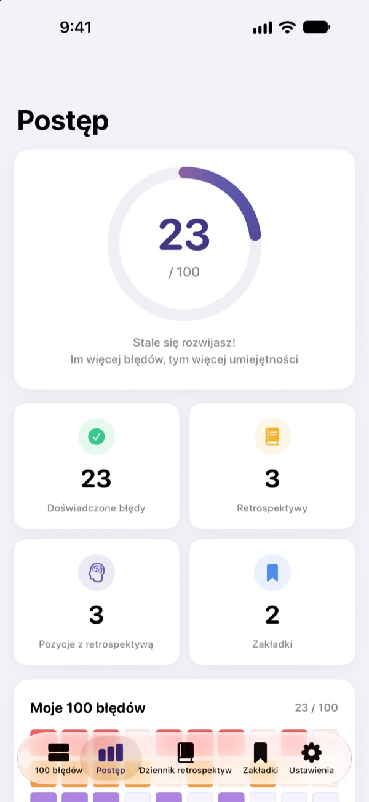

Poznaj błędy,
zanim zaboli
100 błędów, które początkujący programiści popełniają najczęściej, w jednym miejscu. Przy każdym czytasz, co się dzieje, co zrobić i czego się uczysz, a potem odpowiadasz na pytanie do retrospektywy, żeby nie popełnić tego samego błędu drugi raz.
Pierwsze 30 błędów za darmo. Na iPhone’a, iPada i Maca.

Otwórz jeden błąd
To 10 błędów z pierwszej darmowej kategorii, słowo w słowo jak w aplikacji. Te, które już Ci się zdarzyły, oznacz jako Doświadczone.
Znowu ten sam komentarz w code review?
Nieczytelne nazwy zmiennych, funkcje na 200 linii, skopiowany kod. Każdy senior przez to przeszedł, ale zwykle orientujesz się dopiero wtedy, gdy sam się potkniesz. 100 błędów juniora pokazuje Ci te błędy wcześniej i skłania do przemyślenia własnej pracy, żebyś ich nie powtarzał.
Co się dzieje, co zrobić, czego się uczysz
Każdy błąd jest rozpisany na trzy części: co się dzieje, co zrobić i czego się z niego nauczysz.
Dziesięć kategorii, od nawyków przy pisaniu kodu po bezpieczeństwo i wydajność, tylko z błędami, które ciągle wracają w prawdziwych zespołach.

Pytania do retrospektywy, żeby zostało w głowie
Każdy błąd ma 4 pytania do retrospektywy, razem 400. Odpowiadaj z myślą o własnych projektach, a przeczytana wiedza zamieni się w doświadczenie.
Odpowiedzi trafiają do dziennika retrospektyw, ułożone według kategorii, gotowe do ponownego przeczytania.

Zobacz, jak daleko zaszedłeś
Odhaczaj błędy, które już przeżyłeś, a postęp rośnie w każdej kategorii i ogólnie. Dodaj zakładkę do tego, do czego chcesz wrócić.
Wszystko synchronizuje się przez iCloud między iPhone’em, iPadem i Makiem.

Trzy kroki na start
- 1
Wybierz kategorię
Nawyki przy pisaniu kodu, debugowanie i kontrola wersji są dostępne za darmo.
- 2
Przeczytaj i odhacz
Stuknij Doświadczone przy błędach, które sam popełniłeś.
- 3
Zrób retrospektywę
Napisz odpowiedź, nawet krótką. Trafi do Twojego dziennika retrospektyw.
10 kategorii
- Nawyki przy pisaniu kodu
- #001–#010 · Za darmo
- Debugowanie i rozwiązywanie problemów
- #011–#020 · Za darmo
- Kontrola wersji i współpraca
- #021–#030 · Za darmo
- Projektowanie i architektura
- #031–#040 · PRO
- Testy i jakość
- #041–#050 · PRO
- Nauka i rozwój
- #051–#060 · PRO
- Komunikacja i współpraca
- #061–#070 · PRO
- Wdrożenia i utrzymanie
- #071–#080 · PRO
- Bezpieczeństwo i dane
- #081–#090 · PRO
- Wydajność i optymalizacja
- #091–#100 · PRO
Każda kategoria ma 10 błędów, a każdy błąd 4 pytania do retrospektywy.
30 za darmo. Wszystkie 100 z PRO.
Za darmo
- Pierwsze 3 kategorie, 30 błędów
- 120 pytań do retrospektywy do nich
- Checklista, dziennik retrospektyw, postęp i zakładki
- Synchronizacja przez iCloud (iPhone, iPad, Mac)
100 błędów juniora PRO
- Pozostałe 7 kategorii, kolejne 70 błędów (#031–#100)
- 280 dodatkowych pytań do retrospektywy
- Wszystkie przyszłe aktualizacje treści
Subskrypcja miesięczna, roczna (do 50% taniej niż miesięczna) albo jednorazowy zakup dożywotni.
Żadnych danych osobowych, narzędzi analitycznych ani reklam.
Najczęstsze pytania
Co jest za darmo?
Wszystkie 30 błędów wraz z pytaniami w kategoriach Nawyki przy pisaniu kodu, Debugowanie i rozwiązywanie problemów oraz Kontrola wersji i współpraca. Checklista, dziennik retrospektyw, postęp, zakładki i synchronizacja przez iCloud też są darmowe.
Jak korzystać z PRO na innym urządzeniu?
Zaloguj się tym samym Apple ID i stuknij Przywróć zakupy na ekranie subskrypcji.
Jak anulować subskrypcję?
W dowolnym momencie w Ustawienia › Apple ID › Subskrypcje. Subskrypcja odnawia się automatycznie, jeśli nie anulujesz jej co najmniej 24 godziny przed końcem bieżącego okresu. Zakup dożywotni opłacasz tylko raz.
Dane nie synchronizują się między urządzeniami.
Sprawdź, czy wszystkie urządzenia są zalogowane do iCloud tym samym Apple ID i czy iCloud jest włączony dla tej aplikacji w Ustawieniach. Do synchronizacji potrzebne jest też połączenie z siecią.
Jak wszystko usunąć?
Stuknij Zresetuj wszystkie dane w ustawieniach aplikacji. Zaznaczenia, odpowiedzi i zakładki zostaną usunięte bez możliwości cofnięcia.
Na jakich urządzeniach działa?
Na iPhonie, iPadzie i Macu. PRO odblokowuje się na wszystkich urządzeniach z tym samym Apple ID.
Czy moje dane są gdzieś wysyłane?
Nie. Zaznaczenia i odpowiedzi są przechowywane tylko na Twoich urządzeniach i w Twoim iCloud. Aplikacja nie zbiera danych osobowych i nie ma narzędzi analitycznych ani reklam.
Pytania lub sugestie? Napisz na leeo@kakao.com.